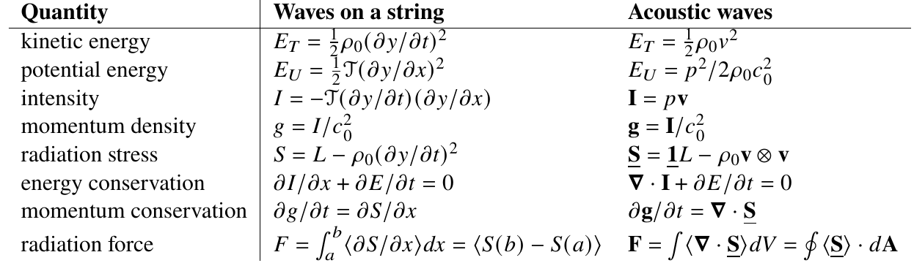

Radiation force
Introduction
Radiation force of a string
Wave equation
Energy densities
Conservation of energy
Conservation of momentum
Radiation force
Radiation force and torque of sound
Energy densities
Conservation of energy
Conservation of momentum
Linear momentum
Angular momentum
Reduction to time-averaged quantities
Acoustic radiation force and torque
Due to traveling waves
Due to standing waves
Is radiation force a linear or nonlinear effect?
Arguments as to why radiation force is a nonlinear effect
Arguments as to why radiation force is a linear effect
Resolution
Useful identities
References

↑ Return to educational resources page